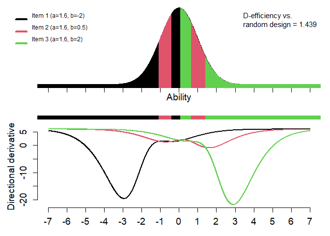

optical
An R package for Optimal Item Calibaration in computerized achievement tests.
With optical package, a set of items that require calibration can be optimally allocated to a group of examinees. The optimization process utilizes the restricted optimal design method, which has been described in detail by Ul Hassan and Miller in their works published in 2019 and 2021. To use the method, preliminary item characteristics must be provided as input. These characteristics can either be expert guesses or based on previous calibration with a small number of examinees. The item characteristics should be described in the form of parameters for an Item Response Theory (IRT) model. These models can include the Rasch model, the 2-parameter logistic model, the 3-parameter logistic model, or a mixture of these models. The output consists of a set of rules for each item that determine which examinees should be assigned to each item. The efficiency or gain achieved through the optimal design is quantified by comparing it to a random allocation. This comparison allows for an assessment of how much improvement or advantage is gained by using the optimal design approach.
Installation
The easiest way to install the optical package from CRAN using:
install.packages("optical")You can install the development version of optical from GitHub with the following code:
# if not installed already on your computer, install devtools
install.packages("devtools")
# Install the package
devtools::install_github("scenic555/optical")
# Load the optical package
library(optical)Example
This is a basic example which shows you how to solve a common problem:
library(optical)
# 2PL-models with difficulty and common discrimination parameters
ip <- cbind(c(1.6, 1.6), c(-1, 1))
yyy <- optical(ip, oc="D", uncert=FALSE, ipop,
imf=c(0.005, 0.01, 0.02, 0.05, 0.1, 0.2, 0.45),
maxiter=rep(300, 6), eps=rep(0.002, 6),
nnn=c(0, 50, 50, 200, 200, 200),
nsp=c(0.001, 0.0001, 0.0001, 0.00001, 0.00001, 0.00001),
sss=0.001, falpha=1.08, ig=3, ex=0)
#> [1;31m---> Outer iteration = 1 [0m
#> ++++++++++++++++++
#> [1;31m---> Adapt grid; outer iteration = 2 [0m
#> ++
# Table of interval boundaries for optimal design with items and probabilities
yyy$ht
#> Lower Upper Item Probability
#> 1 -Inf -0.73445 1 0.2313373
#> 2 -0.73445 0.00005 2 0.2686827
#> 3 0.00005 0.73445 1 0.2686428
#> 4 0.73445 Inf 2 0.2313373
# Graph for (optimal) design
drawdesign(yyy=yyy, ip=ip, ylowl=-1000, refline=0.002, layout=1)
References
Ul Hassan and Miller (2019). Optimal item calibration for computerized achievement tests. Psychometrika, 84, 1101-1128.https://link.springer.com/article/10.1007/s11336-019-09673-6
Ul Hassan and Miller (2021). An exchange algorithm for optimal calibration of items in computerized achievement tests. Computational Statistics and Data Analysis, 157: 107177. https://doi.org/10.1016/j.csda.2021.107177
Bjermo, Fackle-Fornius, and Miller (2021). Optimizing Calibration Designs with Uncertaintyin Abilities. Manuscript. urn:nbn:se:su:diva-198065